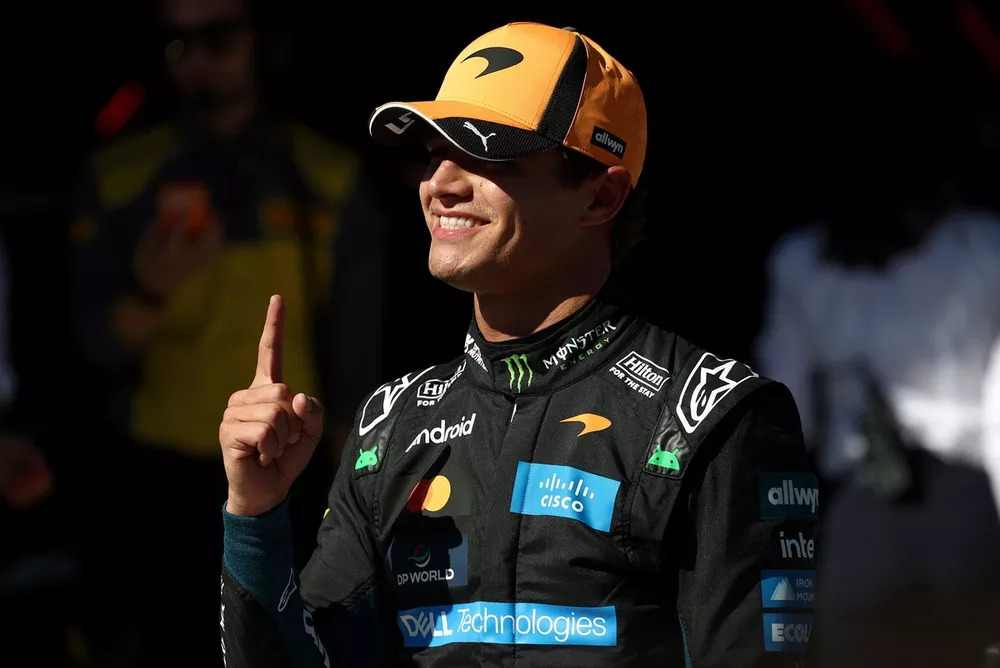

Norris le arrebata la pole position a Antonelli para el GP de España en una clasificación muy reñida en Madrid.

El actual campeón del mundo de F1, Lando Norris, afirmó que le sorprendió conseguir la pole en la primera clasificación de la historia en el nuevo circuito de Madring, tras hacer "una de las mejores vueltas de mi carrera" y superar a Andrea Kimi Antonelli.
Al término de una emocionante sesión de clasificación, Antonelli salió el primero para la última tanda de vueltas rápidas en el veloz circuito de Madring y parecía destinado a hacerse con su séptima pole de la temporada al marcar el mejor tiempo.
Antonelli es calificado como un "talento generacional" tras su victoria en Italia

La comentarista de Sky Sports F1 Naomi Schiff cree que la espectacular victoria de Kimi Antonelli en el Gran Premio de Italia consolida su estatus como un "talento generacional", advirtiendo que el joven italiano podría volverse imparable en la lucha por el campeonato.
El piloto de Mercedes de 20 años ofreció una actuación impresionante en casa, en Monza. Saliendo desde el 19º puesto en la parrilla, Antonelli remontó en el pelotón y aprovechó un coche de seguridad virtual a mitad de carrera para cambiar a neumáticos medios nuevos.